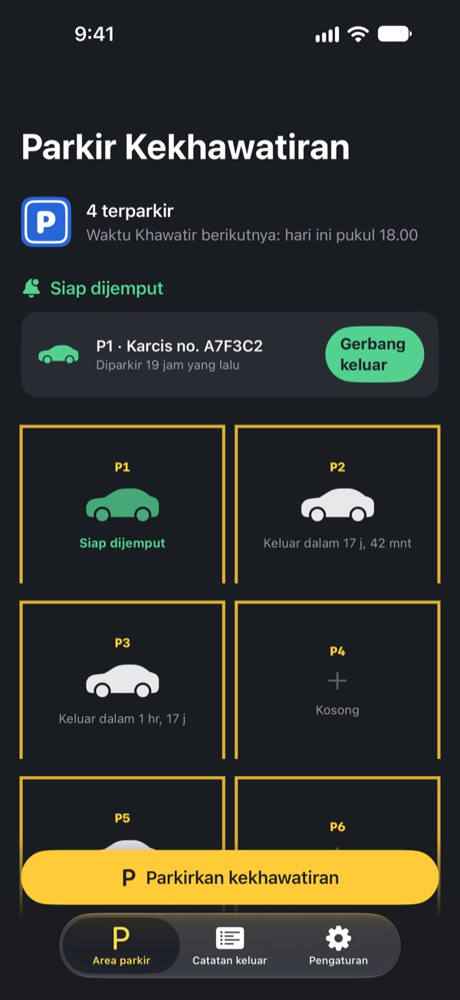
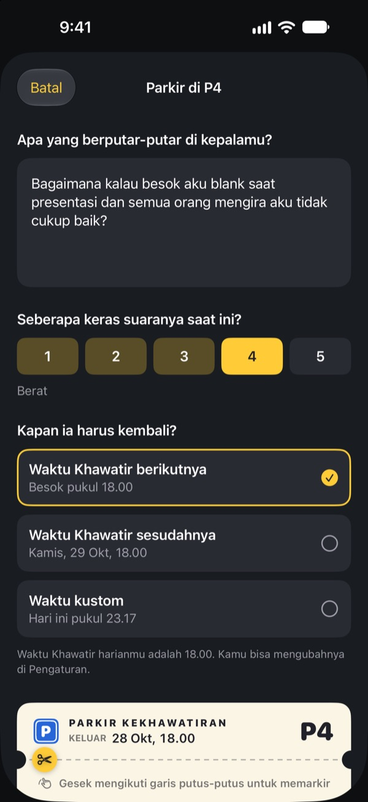
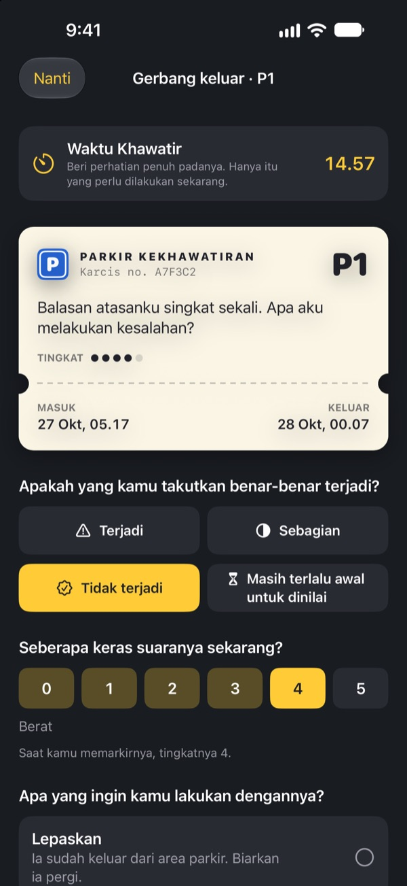
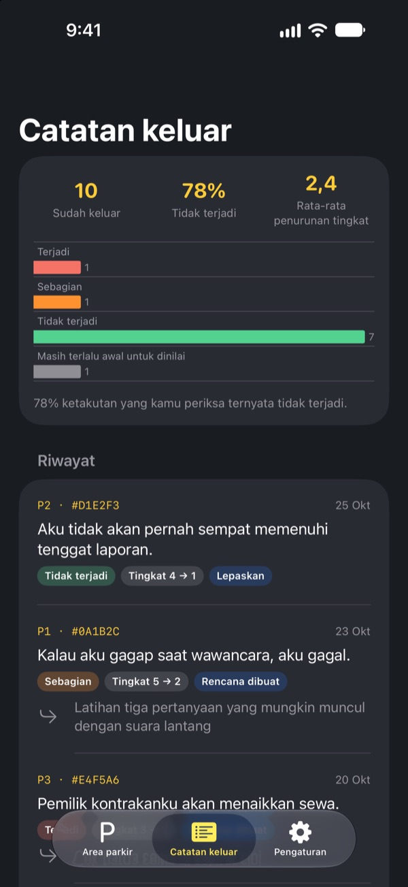

Parkirkan dulu
kekhawatiranmu
Tulis hal yang terus berputar di kepala menjelang tidur di karcis parkir, lalu titipkan. Saat Waktu Khawatir tiba, kami kembalikan. Sampai saat itu, kamu tidak perlu membawanya ke mana-mana.
Semua fitur gratis. Tanpa iklan, tanpa akun.

Coba parkirkan satu kekhawatiran
Pakai contoh ini atau tulis yang sedang ada di kepalamu sekarang. Setelah diparkir, tulisannya buram, dan kamu mengeluarkannya lagi di Waktu Khawatir.
Lampu sudah mati, pikiran belum?
Begitu kepala menyentuh bantal, semuanya mulai: ucapan tadi siang, rapat besok, pesan yang belum dibalas. Makin dipaksa untuk tidak dipikirkan, makin keras suaranya. Parkir Kekhawatiran tidak memintamu mengusirnya. Kamu menuliskannya, memberinya tempat, dan menyisihkan waktu khusus untuk menghadapinya.
Ditulis, lalu turun dari kepala
Tulis persis seperti yang terdengar di kepalamu, lalu pilih seberapa keras suaranya sekarang, dari 1 sampai 5. Sobek karcisnya, dan kekhawatiran itu tinggal di area parkir dalam keadaan buram.
Kalau ia datang lagi, bilang saja: kamu sudah punya tempat. Giliranmu nanti, bukan sekarang.

Cukup 15 menit di Waktu Khawatir
Setiap hari di Waktu Khawatir, pengingat datang. Di gerbang keluar kamu membacanya lagi, mengecek apakah benar terjadi, dan seberapa keras suaranya sekarang.
Lalu lepaskan, ubah jadi satu langkah kecil berikutnya, atau parkirkan lagi sampai Waktu Khawatir berikutnya.

Lihat seberapa sering kekhawatiran terbukti
Makin banyak kekhawatiran yang keluar, makin jelas catatan keluar menunjukkan berapa banyak yang benar terjadi dan seberapa turun intensitasnya.
Kekhawatiran cenderung menebak masa depan lebih buruk dari kenyataannya. Makin banyak dicatat, makin kecil kamu percaya pada kekhawatiran berikutnya.

Mulai dalam tiga langkah
- 1
Pilih Waktu Khawatir
Saat pertama dibuka, pilih kapan kamu akan menghadapi kekhawatiran setiap hari. Bisa diubah nanti di Pengaturan.
- 2
Parkirkan satu kekhawatiran nyata
Langsung parkirkan yang sedang kamu pikirkan, lalu rasakan perubahan intensitasnya sebelum dan sesudah.
- 3
Izinkan pengingat penjemputan
Saat Waktu Khawatir tiba, pengingat datang hanya dengan nomor tempat parkir.
Kenapa ini berhasil
- Khawatir hanya di jam yang ditentukan
- Orang yang memindahkan kekhawatiran ke waktu singkat setiap hari jadi lebih jarang khawatir serta melaporkan kecemasan dan masalah tidur yang lebih sedikit. (Borkovec dkk., 1983; McGowan & Behar, 2013)
- Tulis untuk melepaskan
- Rencana yang konkret membuat urusan yang belum selesai tidak menyelinap ke pikiran, dan menulis lima menit sebelum tidur membantu orang lebih cepat terlelap. (Masicampo & Baumeister, 2011; Scullin dkk., 2018)
- Cek apa yang benar terjadi
- Saat orang dengan kekhawatiran kronis mencatat kekhawatirannya, 91% tidak terjadi. (LaFreniere & Newman, 2020)
Parkir Kekhawatiran dibuat berdasarkan penundaan kekhawatiran, teknik terapi perilaku kognitif (CBT) yang sudah diteliti selama puluhan tahun.
Semua fitur gratis
Gratis
- Tempat parkir tanpa batas
- Pengingat Waktu Khawatir setiap hari, jam keluar bisa diatur sendiri
- Gerbang keluar dan catatan keluar
- Wawasan keluar: berapa yang terjadi dan seberapa turun intensitasnya
Tip (kalau mau)
- Kalau terbantu, kamu bisa memberi tip kecil untuk pengembang
- Pilih kecil, sedang, atau besar
Tip tidak membuka fitur apa pun. Tanpa tip, semuanya tetap bisa dipakai.
Tanpa iklan, akun, server, atau alat analitik. Semua yang kamu tulis hanya tersimpan di iPhone-mu.
Pertanyaan umum
Bagaimana cara mengubah Waktu Khawatir?
Buka Waktu Khawatir di tab Pengaturan. Jam baru berlaku untuk kekhawatiran yang diparkir sesudahnya. Yang sudah diparkir tetap memakai jam keluar semula.
Pengingat penjemputan tidak muncul.
Cek bagian Notifikasi di tab Pengaturan. Kalau notifikasi mati, ketuk Buka Pengaturan iOS lalu nyalakan. Saat mode Fokus atau Jangan Ganggu aktif, pengingat bisa datang tanpa suara. Meski tanpa pengingat, kekhawatiran yang sudah waktunya tetap tampil siap keluar di area parkir.
Apakah isi kekhawatiranku muncul di notifikasi?
Tidak. Notifikasi hanya menampilkan nomor tempat parkir, misalnya “P3 siap dijemput”. Isinya baru terlihat saat kamu membuka aplikasi dan masuk ke gerbang keluar.
Bisa dilihat sebelum Waktu Khawatir?
Ketuk mobilnya di area parkir lalu pilih Kirim ke gerbang keluar sekarang. Tapi penundaan paling efektif kalau kamu menunggu. Kebanyakan kekhawatiran terasa lebih kecil saat Waktu Khawatir tiba.
Bisa pindahkan catatan ke iPhone baru?
Semua hanya tersimpan di iPhone, tanpa akun atau sinkronisasi. Jika kamu memulihkan iPhone baru dari cadangan iCloud atau komputer, atau memakai Mulai Cepat, data ikut pindah bersama data aplikasi lain.
Bagaimana cara menghapus catatan?
Di tab Catatan keluar, geser entri ke kiri untuk menghapusnya. Kalau aplikasi dihapus, semua data ikut terhapus.
Apakah ini terapi?
Parkir Kekhawatiran adalah alat bantu diri berbasis penundaan kekhawatiran dari CBT. Ini bukan perangkat medis dan tidak menggantikan diagnosis atau pengobatan profesional.
Bagaimana kalau aku benar-benar kewalahan?
Kalau kekhawatiran menguasai hari-harimu, atau kamu berpikir untuk menyakiti diri sendiri, tolong jangan menanggungnya sendirian. Di Indonesia, hubungi layanan darurat 112 atau layanan kesehatan jiwa 119 ext. 8.
Ada pertanyaan atau masukan? Kirim ke leeo@kakao.com.